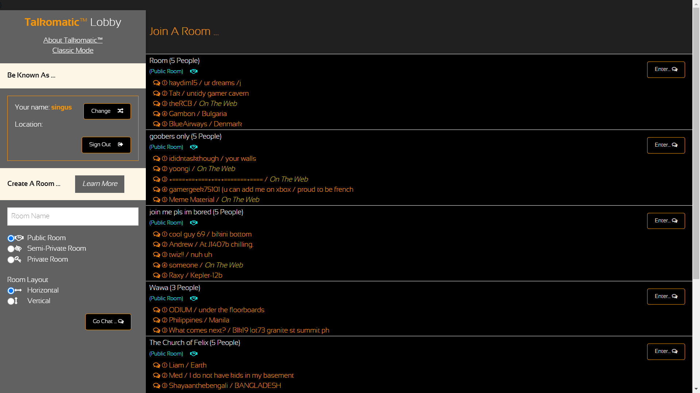
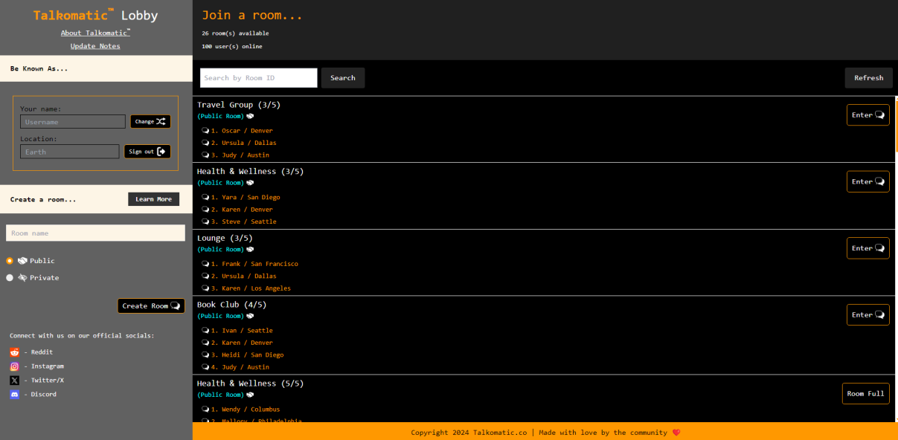
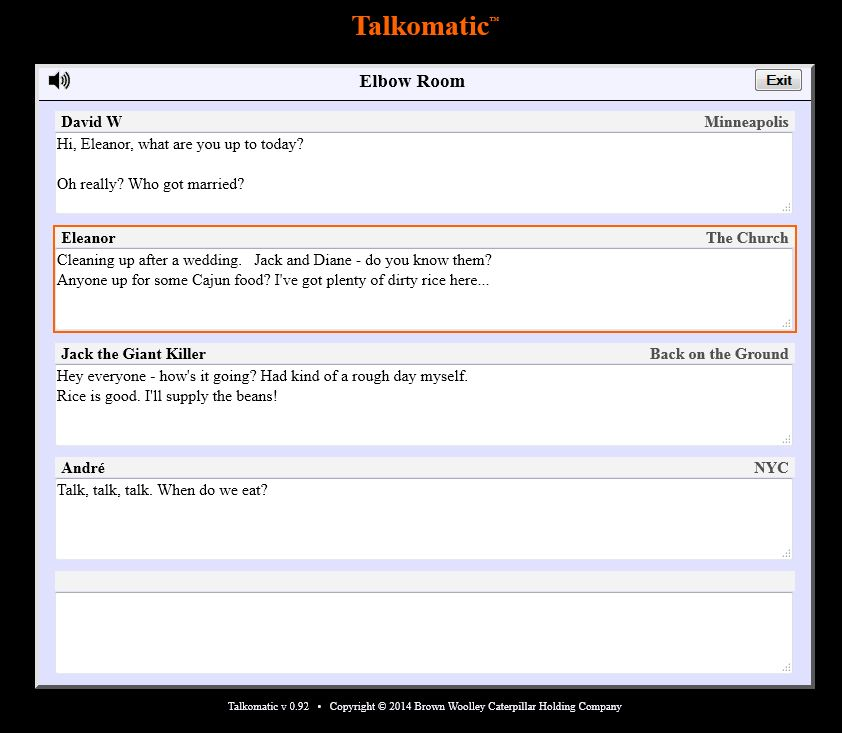
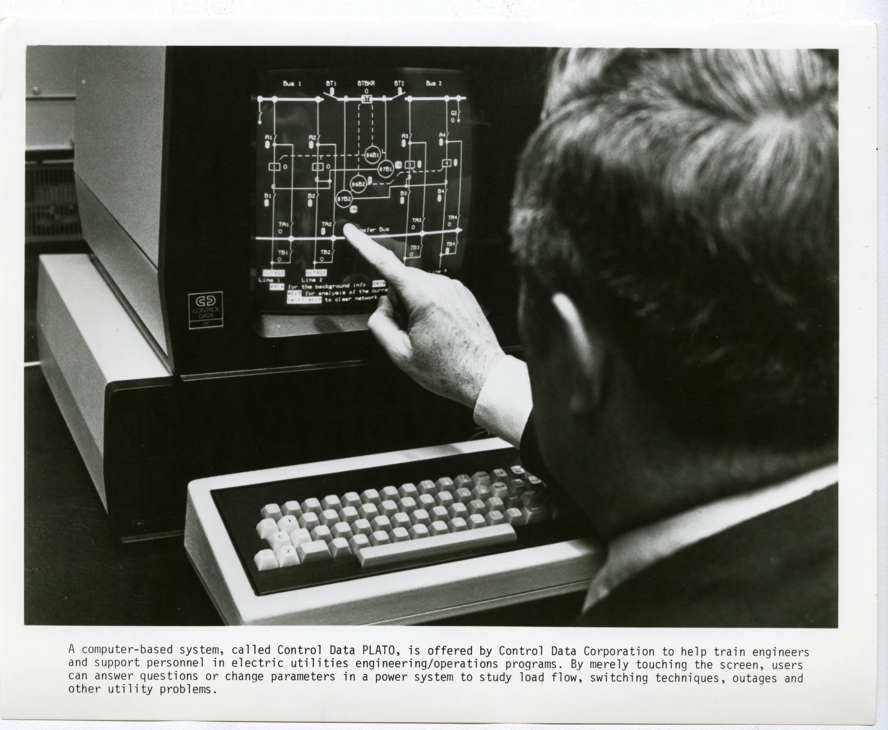

About Talkomatic
History of Talkomatic
Talkomatic, created by Doug Brown and David R. Woolley in 1973, was one of the first online chat systems. Developed on the PLATO system at the University of Illinois, it allowed real-time text communication among users. Each participant had their own section of the screen, and messages were displayed letter-by-letter as they were typed. This innovative system became very popular among PLATO users and remained in use until the mid-1980s.

The 2014 Web Version
In 2014, Brown and Woolley launched a web-based version of Talkomatic. This new version retained the core principles of the original but lifted many of the resource constraints. It was designed to provide a similar experience to the original, with the same real-time, multi-user chat functionality. Unfortunately, due to technical issues and misuse, the web version was taken offline in 2024.
The 2024 Rebuild
In June 2024, Talkomatic was rebuilt from scratch by the community as an open-source project on GitHub. This new iteration of Talkomatic introduces several features that the original 2014 web version lacked, including auto moderation and an improved user interface design. This community-driven effort ensures that Talkomatic remains a vibrant and innovative platform for online communication, continuing to build on its rich legacy.
Innovative Features
The original Talkomatic featured public, private, and semi-private chat rooms, which allowed up to five users per room. Users could request entrance to private rooms or watch conversations in monitor mode. These features laid the groundwork for many modern chat systems and demonstrated the potential of online communication long before the advent of the internet as we know it.
Community and Impact
Talkomatic helped to create a strong sense of community among PLATO users. It was one of the earliest examples of social computing, fostering real-time interaction and collaboration. The influence of Talkomatic extended beyond the PLATO system, inspiring many future developments in online communication and social media.
Legacy and Future
Talkomatic's legacy is a testament to its pioneering role in the world of online communication.
From its early days on the PLATO system, Talkomatic has inspired countless innovations in chat technology and social interaction.
While the 2014 web version brought Talkomatic to a new generation, the community-driven rebuild in 2024 has set the stage for the future.
This latest version, now open-source and enriched with modern features such as auto moderation and a sleek user interface, ensures that Talkomatic continues to evolve with the times.
Moving forward, Talkomatic aims to integrate cutting-edge technologies like AI-driven chat enhancements and augmented reality chat rooms, reaffirming its commitment to fostering real-time, community-focused communication in an ever-changing digital landscape.